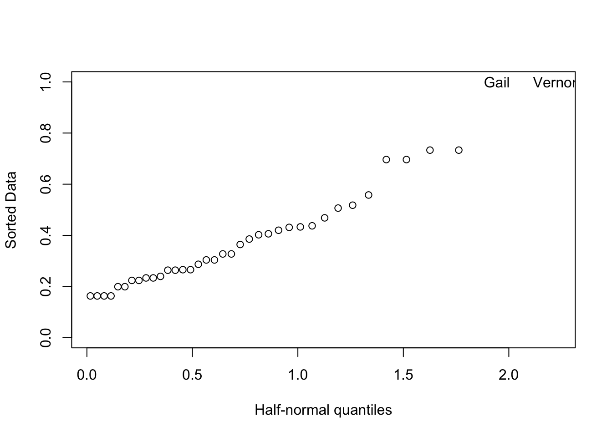

Section 7 of the U.S. Endangered Species Act (ESA) regulates situations in which a federal agency funds, permits, or otherwise has a “federal nexus” on any project that may influence a protected species. Federal agencies must seek a “consultation” on the project with either the U.S. Fish and Wildlife Service (USFWS) or the National Marine Fisheries Service (NMFS), depending on the species, and USFWS or NMFS must assure that any project does not cause “jeopardy” (a relatively high legal standard) for a protected species. A major conservation value of Section 7 consultation is the opportunity for USFWS and NMFS biologists to negotiate changes to projects that could minimize any negative impacts on species (or maximize any positive benefits).
The USFWS office in Lacey, Washington wanted to identify the characteristics of projects that would make them worthwhile for focused consultation time, with an emphasis on projects potentially impacting ESA-listed bull trout (Salvelinus confluentus). Experts developed assessments of the potential improvement(s) in a project that could be realized from negotiating changes to projects such as nearshore construction, culvert improvements, and riparian restoration. These assessment generated a unitless score of the potential value for 38 projects.
At this point the USFWS would like your assistance in evaluating a statistical model they hope to use for prioritizing project consultations. The accompanying data file usfws_bull_trout.csv contains 9 columns of information. They are
score: a project’s potential value (numerical score on a scale of 0-15)
stage: 1 of 3 life history stage(s) occurring in the project area
adults (A)
juveniles/adults (JA)
eggs/juveniles (EJ)
form: 1 of 2 life history form(s) occurring in the project area
anadromous (An)
fluvial/anadromous (FlAn)
cond: 1 of 3 habitat conditions in the project area
pristine (P)
degraded (D)
highly degraded (H)
risk: 1 of 4 levels of extinction risk of the core population occurring in the project area
outside core area (OC)
low (L)
medium (M)
high (H)
unit: 1 of 4 habitat unit types in the project area
inside a core area (IC)
outside a core area in freshwater (OF)
marine (M)
other (OT)
prog: whether or not the set of detailed management guidelines for projects of that type have been established
Yes
No
BMP: whether or not established best management practices will be followed in the project
Yes
No
degflex: the degree of flexibility in project design, timing, and location
low (L)
medium (M)
Problems
Fit a linear model to the dataset that includes all 8 predictor variables. What is the \(R^2\) for the model? Does is seem like a promising model?
The \(R^2\) for the model is around 0.755 and the adjusted \(R^2\) is around 0.606. While these are relatively high, the anova() table suggests that some of the predictors may not be necessary.
Make a plot of the residuals against the model predictions. Name at least two things you should be looking for in a plot like this. What do you see?
Constant symmetrical variation (homoscedasticity) in the vertical (\(\hat{\varepsilon}\)) direction (i.e., vertical spread of the points does not increase or decrease with the x-values - no non-constant variance in \(e\))
Outliers and leverage points
Although there are no clear nonlinear patterns suggesting nonlinearity in the structural part of the model, the magnitude of the residuals appears to be greater for points with larger predicted values (increasing variance in \(e\) with increasing \(\hat{y}\)), suggesting possible heteroscedasticity.
Since the diagnostic plot has indicated potential heteroscedasticity, we can confirm our suspicion with a formal diagnostic test like the Breusch-Pagan test.
The check_heteroscedasticity function from the performance package computes the BP-test non-studentized and uses the fitted values for the potential explanatory variables.
Warning: Removed 2 rows containing missing values or values outside the scale range
(`geom_point()`).
As a default, the bptest function from the lmtest package uses the same explanatory variables as in the regression model you specify (and studentizes as well).
lmtest::bptest(fish, studentize =TRUE) #studentized Breusch-Pagan test
studentized Breusch-Pagan test
data: fish
BP = 17.194, df = 14, p-value = 0.246
lmtest::bptest(fish, studentize =FALSE) #Breusch-Pagan test
Breusch-Pagan test
data: fish
BP = 39.311, df = 14, p-value = 0.0003265
We can obtain matching results to the check_heteroscedasticity function by explicitly using the fitted values of the model:
This plot is not particularly useful because there are only three life stages present and the design is unbalanced; the overall sample size is small and not all stages are equally represented. For example, the “EJ” stage only has three observations, making it difficult to determine if the possible difference in residual variance between stages is actually meaningful.
Produce a \(Q\)-\(Q\) plot of the model residuals and include a \(Q\)-\(Q\) line. Describe what you would hope to see here. Do you?
# base Rqqnorm(residuals(fish),ylab="Residuals",main="")qqline(residuals(fish))
Shapiro-Wilk normality test
data: residuals(fish)
W = 0.90503, p-value = 0.003547
Normal residuals should approximately follow the Q-Q line. However, this plot shows large deviations from the line at both ends, somewhat like a leptokurtic (heavy-tailed) distribution.
datawizard::kurtosis(residuals(fish), type="1") #
Kurtosis
SE
2.572732
0.654624
confintr::kurtosis(residuals(fish))-3#Pearson's Measure of Kurtosis
[1] 2.572732
moments::kurtosis(residuals(fish))-3
[1] 2.572732
moments::anscombe.test(residuals(fish))
Anscombe-Glynn kurtosis test
data: residuals(fish)
kurt = 5.5727, z = 2.5940, p-value = 0.009486
alternative hypothesis: kurtosis is not equal to 3
summary(datawizard::kurtosis(residuals(fish)), test =TRUE)
Kurtosis
SE
z
p
3.122581
0.654624
4.770038
1.8e-06
Indeed, we see that the distribution of residuals has an (excess) kurtosis value significantly larger than zero, indicating a leptokurtic distribution.
Would it make sense to plot \(e_t\) against \(e_{t+1}\) for this model? Explain why or why not.
It would not make sense to plot \(e_t\) against \(e_{t+1}\) because the structure of these data would not result in serial autocorrelation. Plotting lagged residuals and formal diagnostic tests for residual autocorrelation are more relevant for temporal, spatial, and blocked data.
Which projects have the 3 largest leverages? Briefly explain what this tells us.
## leverages of pointshv <-hatvalues(fish)## assign their namesnames(hv) <- fws$ProjectNameslice_max(data.frame(hat=hv), hat, n=3)
hat
Gail
1.0000000
Vernon
1.0000000
Turner
0.7332097
Forgotten
0.7332097
Vernon, Gail, Turner, and Forgotten have the largest leverages. This means that they are extreme in the predictor \((X)\) space and may have had a large influence on the model fit.
What rule of thumb could you use to assess whether any leverages are particularly large? Under this rule of thumb, do you have any particularly large leverages? If yes, which projects?
A rule of thumb is that a leverage point is large if \(h_{ii} \geq 2\bar{h} = \frac{2p}{n}\).
## threshold value for h_i ~= 0.78p <-length(coefficients(fish))n <-length(residuals(fish))th <-2* ( p/n)th
Using this rule of thumb, Gail and Vernon have particularly large leverages.
We can confirm this with a half-normal plot:
halfnorm(hv,labs=fws$ProjectName)

Calculate the studentized residuals to look for outliers. Remember to use a Bonferroni correction, and explain why you should use it. What did you find? Which project has the largest studentized residual?
We can compute the studentized residuals as \[t_i = \frac{y_i-\hat{y}_{(i)}}{\hat{\sigma}_{(i)}\sqrt{1+X_{i} (X_{(i)}^\top X_{(i)})^{-1}X_i}} \]
which are distributed as a \(t\)-distribution with \(n-p-1\) df. Fortunately, there is an easier way to compute \(t_i\) that avoids doing \(n\) regressions: \[t_i=\frac{\hat{e_i}}{\hat{\sigma}_{(i)} \sqrt{1-h_i}}= r_i \left(\frac{n-p-1}{n-p-r_i^2} \right)^{1/2} \]
stu <-rstudent(fish)stu_manual <- std*sqrt(((n-p-1)/(n-p-std^2)))all.equal(stu, stu_manual)
[1] TRUE
We need to use a Bonferroni correction when performing significance tests to determine if case \(i\) is an outlier because otherwise we would identify an excess of outliers (making Type I errors) just because of the number of cases that we are testing. The level of statistical significance \((\alpha)\) determines probability of committing a type I error (rejecting the null hypothesis when it is actually true): if we had \(n=100\) and tested all of the cases with \(\alpha=0.05\), we might expect to find around 5 outliers using this procedure even if the null hypothesis was true. Even though we might explicitly test only one or two large \(t_i\)’s, we are implicitly testing all cases since we need to consider all the residuals to find out which ones are large.
# Part Amax_res <- stu[which.max(abs(stu))]max_res <-unname(max_res)max_res
[1] 3.523815
# Part Bdf_fish <-df.residual(fish)-1#df=22# Part Cun_p <-2*(1-pt(max_res, df=df_fish, lower.tail =TRUE)) #unadjusted p-value# Part D: adjusted p-value. These agree with each other2*(1-pt(max_res, df=df_fish, lower.tail =TRUE))*nrow(fws)
[1] 0.07264217
p.adjust(un_p, method ="bonferroni", n =nrow(fws))
[1] 0.07264217
p.adjust(un_p, method ="bonferroni", n =nrow(fws)-2)
p.adjust(un_p, method ="bonferroni", n =sum(!is.na(stu)))
[1] 0.0688189
# Part Et <-qt(p=.05/(nrow(fws)*2), df=df_fish) #find adjusted test statistic, -3.678813, which has abs > max_res, indicating that with the correction, the outlier is not significant# Part F. Here, the rstudet and unadjusted p-val columns agree with the results of Parts A and C, respectively, but the Bonferroni p-value uses the number of non-NA studentized residuals rather than the number of observations in the data set.car::outlierTest(fish)
No Studentized residuals with Bonferroni p < 0.05
Largest |rstudent|:
rstudent unadjusted p-value Bonferroni p
10 3.523815 0.0019116 0.068819
Calculate Cook’s Distances and produce a halfnormal plot of them. Label the 3 largest \(D_i\) in the plot with the project names. Are these the same sites as the top 3 projects you identified in (g)? Briefly explain why or why not.
This metric combines the residual effect and leverage to quantify the influence. A half-normal plot of \(D_i\) can be used to identify influential observations.